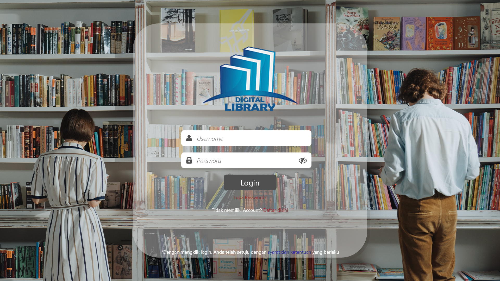
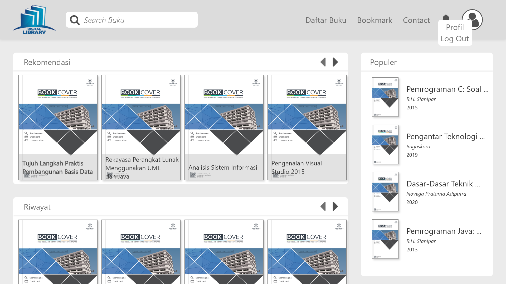
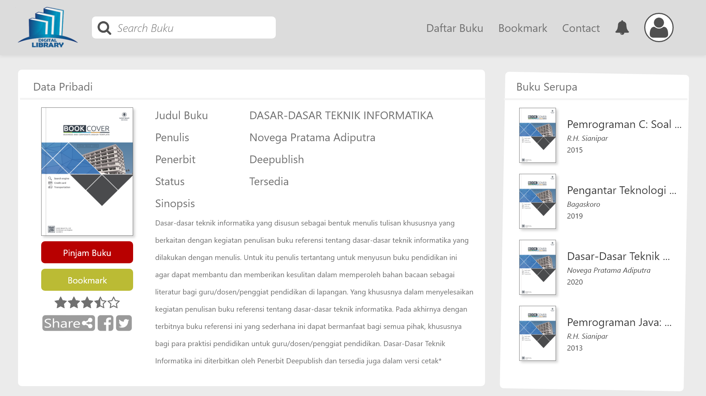
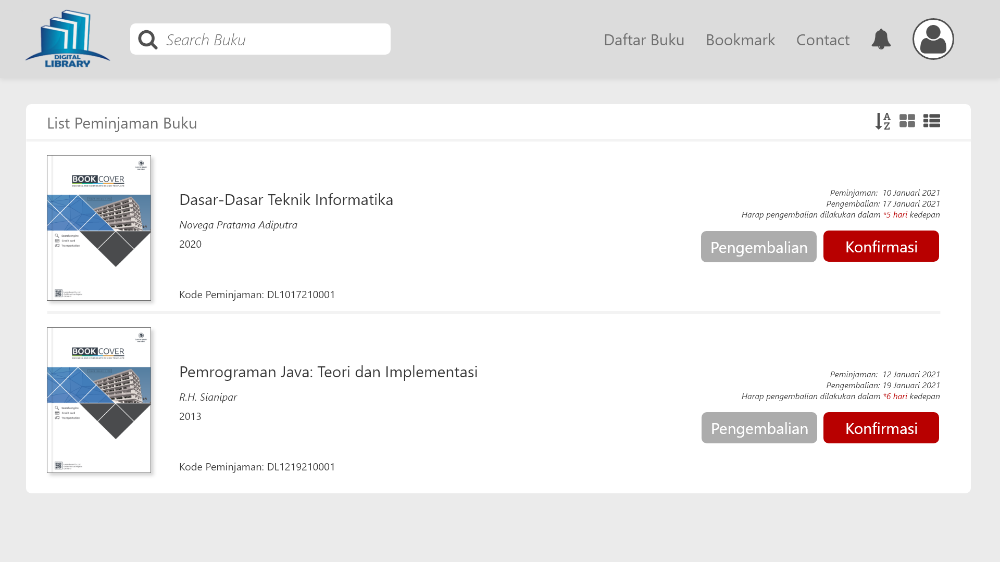
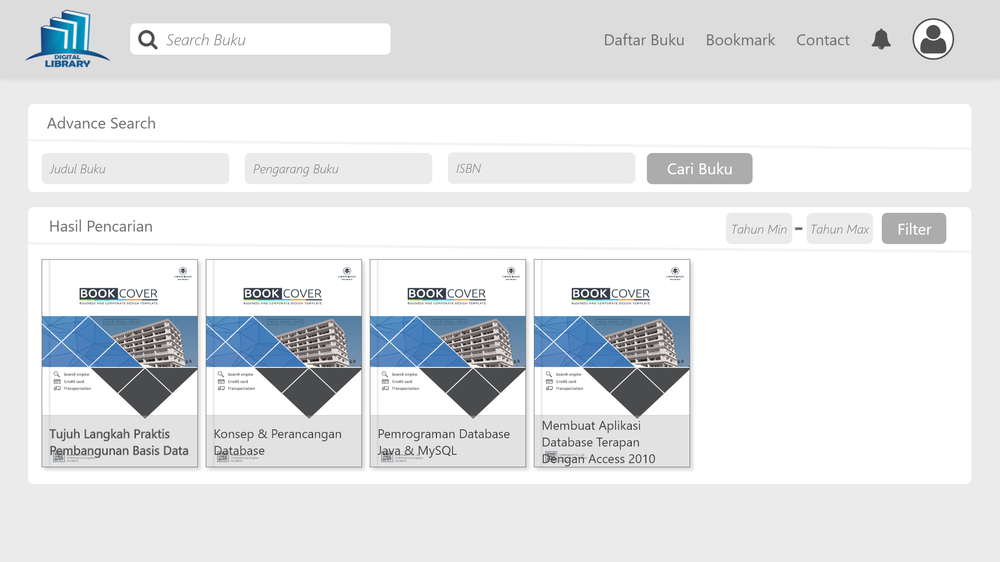
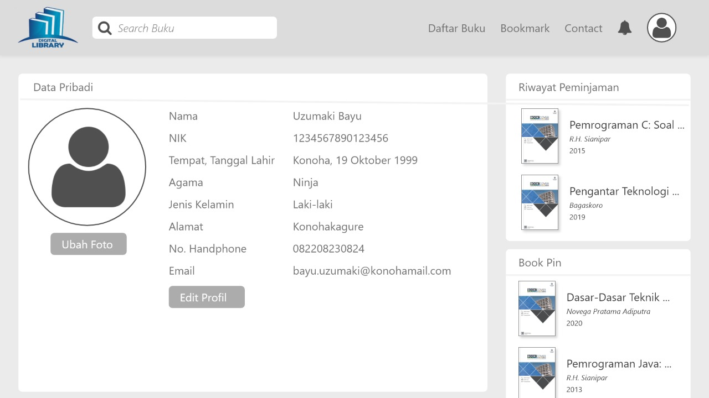
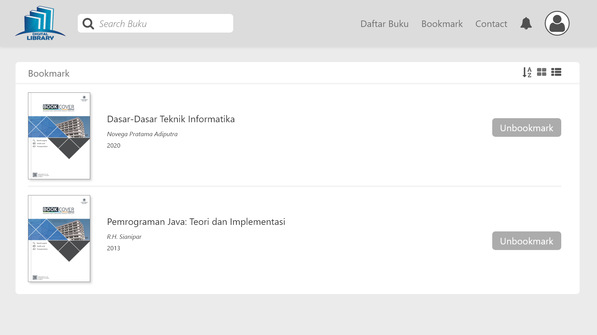

Perpustakaan Digital Persentasi Framework
Created Zoker TeamDeskripsi Aplikasi
Perpustakaan digital merupakan penerapan teknologi yang memanfaatkan informasi sebagai sarana untuk menyimpan, mendapatkan dan menyebarluaskan informasi ilmu pengetahuan dalam format digital. Perpustakaan digital dapat dianalogikan sebagai tempat menyimpan koleksi perpustakaan yang sudah dalam bentuk digital. Perpustakaan digital memiliki tempat penyimpanan tidak hanya terbatas pada format tertentu dan kemampuan dalam menyediakan akses informasi tanpa adanya batasan ruang dan waktu.Manfaat Aplikasi
- Efisiensi Dalam Hal Tenaga Dan Waktu
- Akses Seluruh Koleksi Buku 24 Jam Penuh
- Memudahkan Pencarian Buku Berdasar Judul, Penulis, Dan ISBN
- Mendapatkan Rekomendasi Buku Untuk Dibaca
- Proses Peminjaman Dan Pengembalian Buku Yang Mudah
- Informasi Ketersediaan Buku Dalam Perpustakaan
- Hemat Biaya Dengan Dokumentasi Digital
- Pengelolaan Koleksi Buku Lebih Terorganisir Dengan Sistem Monitoring
Keunggulan Aplikasi Aplikasi
- pengguna dapat mengakses layanan digital library kapanpun dimanapun dengan internet
- Gratis dan Kemudahan dalam mengakses
- Penyimpanan koleksi lebih aman dibandingkan penyimpanan diperpustakaan biasa
- Peminjam buku dan pengembalikan buku tidak gampang dan cepat
- Pengontrolan Perpustakaan tentang ketersediaan buku lebih gampang
- Digital library menyimpan rekam jejak aktifitas pengunjung perpustakaan
Design Login
User dapat melakukan login dengan menginput username dan password. User juga dapat register akun baru atau reset password.
Design Home
Halaman home merupakan halaman pertama yang dijumpai di website setelah dilakukan login.
Design Keterangan Buku
User dapat melihat keterangan sebuah buku, seperti penulis, penerbit, status dan juga sinopsis.
Pengembalian
sebagai halaman pengembalian, disini user dapat mengembalikan buku yang telah dipinjam sebelumnya dan melakukan konfirmasi buku dalam keadaan utuh dan baik.
Pencarian Buku
sebagai halaman Pencarian, disini user dapat melakukan pencarian dengan menggunakna keyword judul buku, pengarang buku ataupun isbn buku.
Design Profil
User dapat melihat profil dan melakukan edit profil
Design Bookmark
User dapat melihat list buku yang telah di bookmark, dan user juga dapat melakukan unbookmark